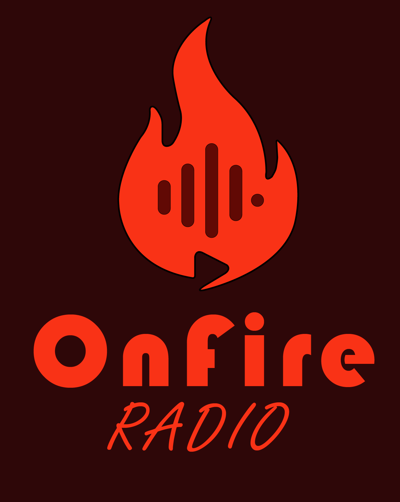

OnFire Radio como un medio digital.
Onfire Radio es una forma nueva de hacer radio, mover los nedio digitales y atraer nuevos oyentes y espectadores
Misión: Crear un medio de comunicacion digital donde se mexcln los ritmos musicales, el periodismodeportivo y los buenos valores. Además, juntar una comunidad donde el oynte y locutores puedan convivir de manera virtual en confianza. Visión: OnFire Radio nace omo una idea de página de Tik Tok con el paso de los meses, la idea maduró un poco más y no solo se la considera como una página de red social, sino tambien, una radio online. El proyecto tiene una metade no solo ser un medio digital, sino, llegar a un punto donde se pueda convertir en una frecuencia FM manteniendo la escencia digital. Con esfuero y sacrificio, se estima que este proyecto llegue a grandes ligas en un tiempor aproximado de 10 años.